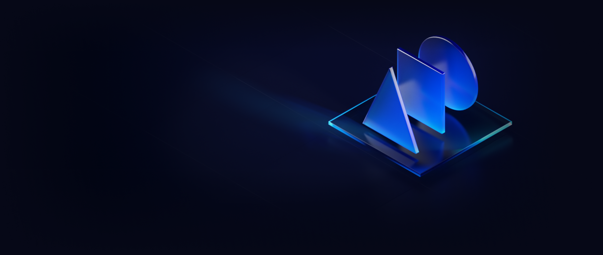

KIRA is built as the powerhouse of the Web 3 economy to host decentralized financial applications

KIRA is a decentralized network, secured by both cryptocurrencies and real world assets at stake, thanks to its proprietary Multi-Bonded-Proof-of-Stake (MBPoS) consensus mechanism.
Positioned within the Interchain and Web3 ecosystems KIRA makes it safer and easier to gain access to decentralized financial applications and unlock full economical potential of your capital to generate yield.
1
As Layer 1 network KIRA enables hosting and scaling of DeFi applications through dedicated parachains secured and operated by the validators of the KIRA relay chain called KIRA Hub.
With growing value at stake, not capped by the value of any single staking token, KIRA is capable of offering unparalleled level of shared security to all of its parachains and settle transactions far exceeding value of any single asset, which would be a security bottleneck for any other decentralized network currently in existence.
2
KIRA not only secures and scales decentralized finance applications but also supplies them with liquidity thanks to natively supported staking derivatives.
Assets staked on KIRA are represented 1:1 by transferable derivatives, which can be used with any DeFi app within and outside of KIRA. This enables delegators to generate passive income from staking as well as benefit from other yield farming protocols at the same time thus utilize full potential of their capital without any third party custody.
KIRA Network is supported by four key pillars
Security
KIRA is the first network that does not limit its security by the value of its own token at stake. KIRA supports dApps that can settle transactions without throughput or security limitations thanks to the real value at stake.
Liquidity
Multi-Bonded Proof of Stake consensus natively supports 1:1 staking derivatives that are transferable, tradable and stake-able on leverage on multiple different chains at the same time.
Interoperability
By interconnecting with other networks within Web3, KIRA provides a cross-chain settlement layer for value and data transfers between any blockchain applications.
Scalability
KIRA uses a hub-spoke architecture where execution of dApps happens on independent parachains, making the blockchain application fully sharded.
Network effect
Stage 1
Users deposit and stake their assets on the KIRA Network
Stage 2
KIRA's network increases security with growing assets at stake, while dApps deployed on KIRA and accessible cross-chain gain access to liquidity of staked assets.
Stage 3
Use of dApps increases due to growing amount of liquid assets available to interact with those applications
Stage 4
Rewards from network fees increase along the growing network activity
Stage 5
Thus increasing incentives to deposit and stake even more assets on KIRA's network